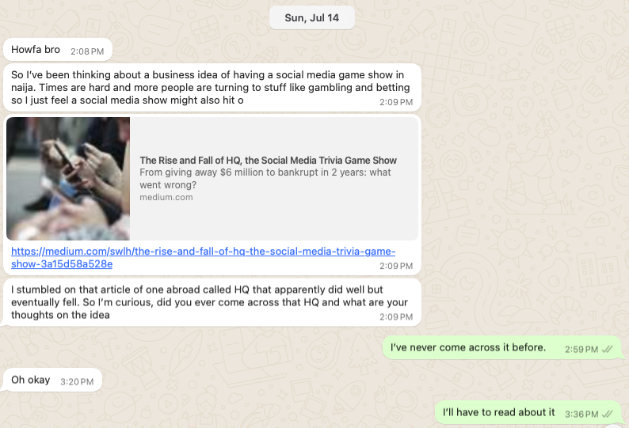

A Social Gameshow
Victor sent me a random WhatsApp message one Sunday

He referenced a social media gameshow called HQ https://medium.com/swlh/the-rise-and-fall-of-hq-the-social-media-trivia-game-show-3a15d58a528e which I never got around to reading - somehow, I wasn’t convinced.
But a week later I got thinking, How about a trending topic social media game show, exclusively on twitter? (I’ll never call it X)
It would have some parts
First, a trending topic is chosen and summarized, with a list of the top 2/3 view points. This post also has a poll, so users can pick a side. The winning side is announced after the poll runs its course.
Next, players can now respond in-thread with their best defense of the winning position. Other users can vote by liking a post. The top 3 liked posts in-thread, within the alotted game time can now be announced as winners, and added to a final poll.
In this last poll, users can vote like before, but the 3 winners liked posters will have to select their top explanation from the other 2 posts. The winner would have the highest votes from the majority and peers.
Here are some reasons why it could work.
-
Most news and issues break on twitter and then filter down to other social media.
-
There’s a court of public opinion, and for any major issue, at least two sides of the debate always exist, with passionate supporters.
-
Going back to newspaper stands, there’s an existing culture of public dialogue and debate of news and trending topics.
-
It’s relatively low-effort to test out.
How I would go about it would be: - build a list of topics - partner with an influencer to soft-launch the game with their posts(@danielregha is my pick) - figure out a revenue model - iterate on branding - look for sponsors